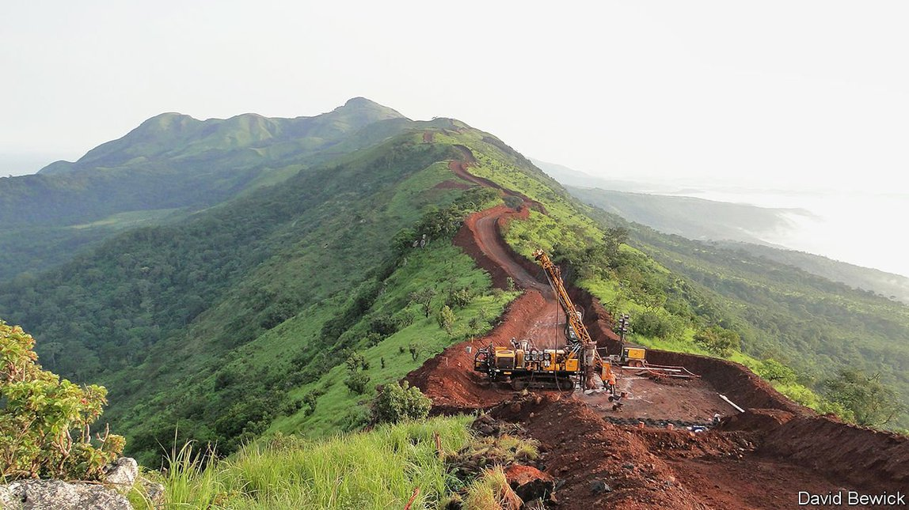
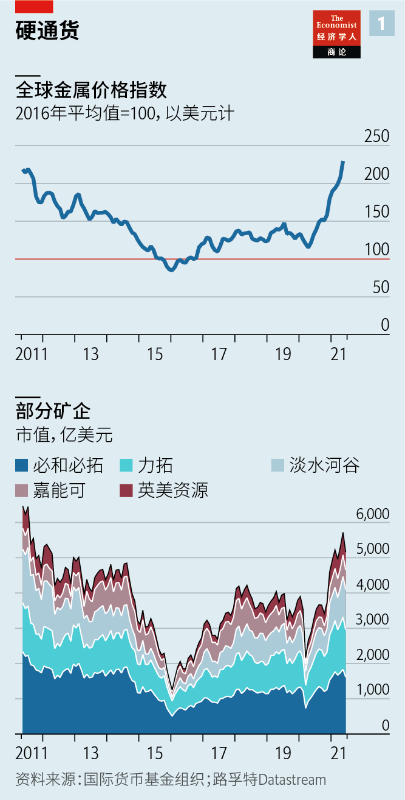
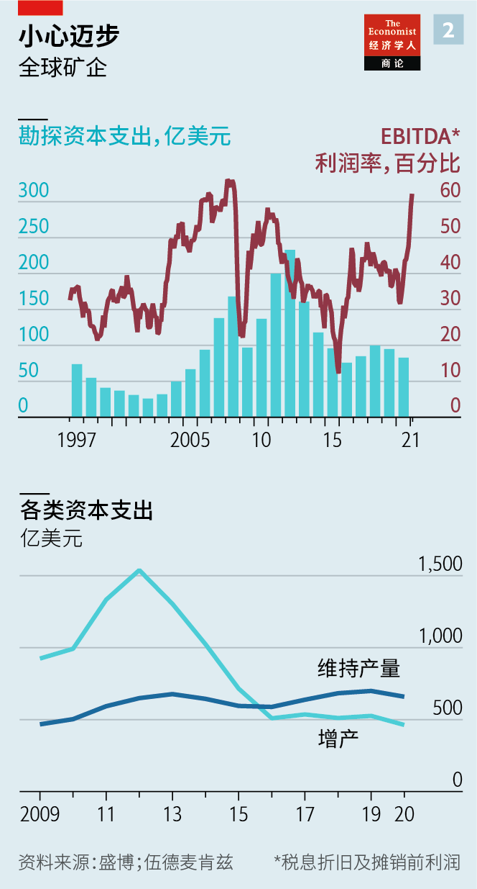
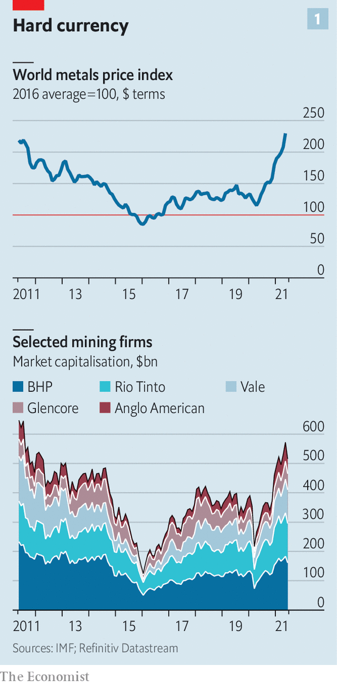
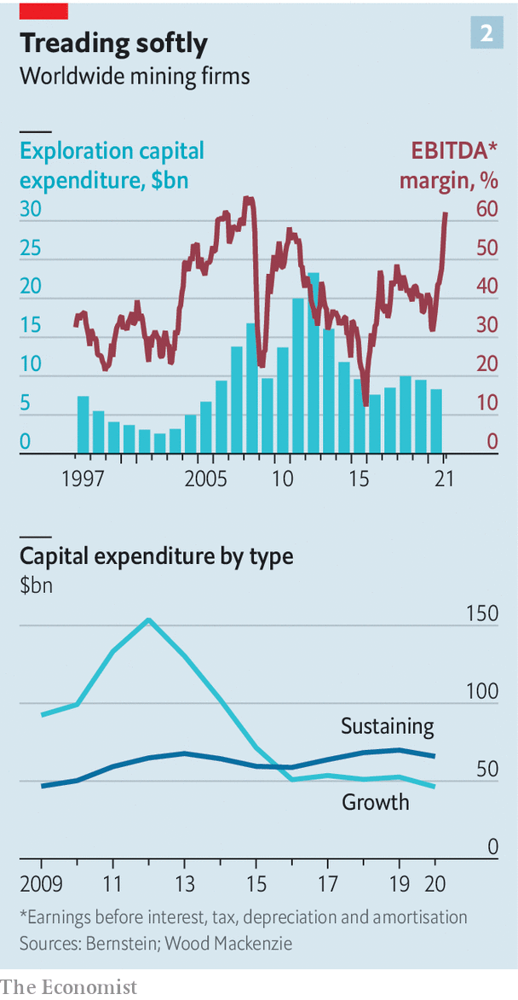

2021-07-11T16:57:52+00:00
两难之地
矿业巨头的资本约束对投资者是好消息
可惜对地球不是好事
在秘鲁南部的高山上，有一个叫作奎拉维科（Quellaveco）的巨大露天铜矿。它是世界上最大的未开发铜矿之一。矿业巨头英美资源（Anglo American）和它的大股东联合另一家投资者，已经为开采该铜矿投入了50多亿美元。预计该铜矿将于2022年投产。一旦投入运营，它将让秘鲁这个世界第二大产铜国的铜产量增长超过10%。
过去，当大宗商品价格像近来一样飙升时（见图表1），世界各地的矿业公司就会蜂拥启动奎拉维科这样的项目。这一次，值得注意的是这种项目很罕见。英美资源、必和必拓（BHP）、嘉能可（Glencore）、力拓（Rio Tinto）以及淡水河谷（Vale）这五家多元化经营的矿业巨头目前基本没有什么筹建中的大型新矿。部分原因是采矿业从勘探到投产的周期太长——英美资源早在1992年就收购了奎拉维科。但在投资低迷的背后还有一些其他因素。它们将给能源业向气候友好的转型带来影响，这个转型过程会用到大量矿产。
本世纪头十年，五大矿业公司通过一连串大规模并购巩固了自己的市场势力，其时正好赶上中国成为金属消费大户。这引发了一个长达15年的大宗商品价格高企的超级周期。矿业公司追逐更高的产量和超大型项目，狂撒了约一万亿美元。事实证明，许多投资是灾难性的——一项估计显示投资者大概收回了其中的五分之一。在经历了一轮换帅潮之后，新上任的矿老板们承诺扭转局面。在过去几年里，价值——而不是产量——成为了这个行业的口号。淡水河谷的老板爱德华多·巴托洛梅奥（Eduardo Bartolomeo）誓言：“我们永远不会丢掉自己的资本约束。”
到目前为止，这些矿商遵守了自己的承诺。尽管该行业的资本支出自2015年以来有所增长，但仍比2012年时的峰值低50%。大部分资金都用于维持现有产量，而不是增产。即便是在金属价格上涨拉高了利润率之时，勘探支出仍保持在较低水平（见图表2），经纪公司盛博的丹妮尔·奇古米拉（Danielle Chigumira）指出。这一反既往。
这种节制能否持续将取决于新一批CEO。过去一年半中，五大巨头中有三家换了老板。去年1月，迈克·亨利（Mike Henry）开始执掌必和必拓。一年后，雅各布·斯陶舒勒姆（Jakob Stausholm）成了力拓的老板，他的前任因为力拓毁坏了澳大利亚一个有着4.6万年历史的土著遗址而被解雇。7月1日，加里·内格尔（Gary Nagle）出任嘉能可CEO，此前伊凡·格拉森伯格（Ivan Glasenberg）统领这家总部位于瑞士、由贸易商转型而来的矿业公司长达19年。英美资源集团的老板马克·卡蒂芬尼（Mark Cutifani）可能在明年退休。
他们最大的挑战是应对能源转型。这些公司已经采取了一些防御性措施，退出了一些碳排放最密集的业务。2018年，力拓放弃了热能煤业务。6月6日，英美资源集团剥离了煤炭业务。必和必拓和淡水河谷也承诺要这么做。随着运营商开始投资可再生能源并努力推动采矿车辆电气化，全球矿山排放的二氧化碳正在减少。
理论上说，能源转型可能是一轮大淘金。要实现巴黎气候协议的目标，把全球变暖幅度限制在比工业化前水平高1.5℃以内，世界对钴、铜、锂和镍等金属的需求将会激增。据预测机构国际能源署（International Energy Agency）计算，一辆电动汽车所需的矿物是一辆内燃机汽车的六倍。一座普通的陆上风电场消耗的金属资源是燃气发电厂的九倍。
然而，目前看来，向环保金属转型比摆脱污染型矿物更难。五大矿商的投资组合目前充满了上一轮超级周期中累积的大宗商品。铁矿石和化石燃料仍占它们矿业收入的一半以上、营业毛利润的四分之三。高企的金属价格使得潜在收购目标看上去很昂贵。
另一种选择是自己开发项目，这也有问题。首先是投资者。在上次烧掉股东价值后，矿商一直受到严格约束。一位大投资者说，老板们“知道去做一个这样的超大项目就是想被炒鱿鱼”。因大宗商品价格飙升而流入的大量现金都以创纪录的股息和回购返还给了股东。一位矿业高管担心，丰厚的回报已经改变了自己公司的股东构成，引来了一味追求收益而不愿投资成长型新项目的投资者。
其次，对于大型矿商来说，能源转型所需的许多金属的市场太小，不足以让它们费心。以用于电池的锂为例。2004年，力拓在塞尔维亚的雅达尔（Jadar）发现了一个大型锂矿。德意志银行的利亚姆·菲茨帕特里克（Liam Fitzpatrick）估计，如果这个项目在几年内投产，可能会为力拓的收入带来2%至3%的增长。但对一家市值1400亿美元的公司来说，这只是杯水车薪。钴的市场甚至更小。
铜是个例外。即使到了今天，它在电线上的普遍应用令它依然是按价值计最大的金属市场之一。要实现气候目标，世界对铜的需求可能会增加近两倍。然而，找到一个新的大型铜矿并不容易。勘探发现的矿藏越来越小，矿石品位越来越低。这推高了采矿成本。可能除了勇猛无畏的嘉能可之外，大矿商越来越不愿涉足铜储量丰富而勘探不多的地区，比如政局动荡的刚果金。即使发现了矿层，要增产也是个艰难的过程。而且由于矿商承受着来自公众日益增多的压力，要求减轻对本地环境和居民的风险，这个过程还会进一步拉长。现在从勘探到投产平均需要15年以上。
还有资源民族主义。新冠疫情掏空了各国政府的金库。矿商担心自己会被要求填补资金缺口。世界最大的产铜国智利正在修改宪法。一项等待议会通过的新法案可能会对矿业利润征收80%的税。秘鲁的左翼当选总统佩德罗·卡斯蒂洛（Pedro Castillo）希望对矿业利润征收70%的税。另外两个主要产铜国赞比亚和巴拿马也在考虑提高税率。
有一样东西可能会让矿业巨头松开自己的钱袋子，那就是竞争。像美洲锂业（Lithium Americas）和全球钴业（Global Cobalt）这样的小公司希望大获成功。一些非西方的矿业巨头也是。俄罗斯大型矿业公司诺里尔斯克镍业（Norilsk Nickel）计划在五年内投资150亿至175亿美元（去年该公司投资了17亿美元）。中国竞争对手紫金矿业也有庞大的扩张计划。如果金属价格保持在高位，刚果金等棘手地区的某些大型项目可能会再次变得有吸引力，尽管鉴于金属价格上涨极快，且铜价在5月的峰值后下滑，一些矿老板对金属价格能否一直保持高位持怀疑态度。
西方一些政府可能会为金属价格提供支持。6月8日，白宫发布了一份关于供应链的跨部门评估报告，要求采取更多行动，确保锂、镍等关键矿产的安全。欧盟也想通过其绿色产业战略实现同样的目标。淡水河谷的巴托洛梅奥预计，未来矿商将与各国政府建立更多的战略合作关系。
然而，如果不增加供应，铜等一些金属的短缺可能不可避免。其中一些缺口或许能通过用其他金属替代或加大回收利用来弥补。但不是所有缺口都能弥补。投资者赞赏矿老板们近年来的自我约束。地球可能更希望回到过去挥霍的局面。
2021-07-11T16:57:52+00:00
Rocks and hard places
Big miners’ capital discipline is good news for investors
Not, alas, for the planet
HIGH IN THE mountains of southern Peru lies Quellaveco, a vast open-pit copper mine. It is one of the world’s largest untapped deposits of the red metal. Anglo American, a mining giant and its majority owner, has, along with another investor, spent over $5bn getting it up and running. It is expected to come online in 2022. Once operational it will add more than 10% to the copper output of Peru, the world’s second-biggest producer of the stuff.
In the past when commodity prices were surging, as they have been of late (see chart 1), the world’s miners would be piling into projects like Quellaveco. This time the notable thing about it is its uniqueness. Few of the diversified mining behemoths—Anglo American, BHP, Glencore, Rio Tinto and Vale—have big new mines in the works. That is partly because of the industry’s long lead times; Anglo bought Quellaveco in 1992. But other forces, too, lie beneath the subdued investment. They will have consequences for the mineral-intensive energy transition towards a climate-friendlier world.
The big five miners consolidated their market power with a spate of huge mergers in the 2000s, just in time for China’s emergence as a voracious consumer of metals. The result was a 15-year supercycle of high prices. Miners splurged around $1trn chasing higher volumes and mega-projects. Many proved disastrous—perhaps a fifth of that investment was returned to shareholders, according to one estimate. After a round of firings, a new generation of mining bosses promised to do better. In the past few years value, not volume, became the industry’s watchword. “We will never lose our capital discipline,” vows Eduardo Bartolomeo, boss of Vale.
So far the miners have kept their promise. Although capital spending in the industry has grown since 2015, it is still 50% below its peak in 2012. Most of that has gone on sustaining current output, not adding new capacity. Even as rising metals prices have padded profit margins, spending on exploration has stayed low, notes Danielle Chigumira of Bernstein, a broker (see chart 2). That is a break from the past.
Whether the sobriety lasts will depend on a fresh crop of CEOs. In the past 18 months three of the big five got new bosses. In January 2020 Mike Henry took the reins at BHP. A year later Jakob Stausholm became boss of Rio Tinto, after his predecessor was fired in the wake of the destruction of a 46,000-year-old Aboriginal site in Australia. On July 1st Gary Nagle took the top job at Glencore, ending Ivan Glasenberg’s 19-year reign at the Swiss-based trader-turned-miner. Mark Cutifani, Anglo American’s boss, may retire next year.
Their biggest challenge is responding to the energy transition. The companies have taken some defensive steps, getting out of the most carbon-intensive operations. Rio Tinto left the thermal-coal business in 2018. On June 6th Anglo spun off its coal operation. BHP and Vale have promised to do the same. Mines across the world are emitting less carbon dioxide, as operators invest in renewable power and try to electrify mining vehicles.
On paper, the energy transition could be a mining bonanza. If the world is to meet the Paris climate agreement’s target of limiting global warming to 1.5°C above pre-industrial levels, the demand for metals such as cobalt, copper, lithium and nickel will explode. The International Energy Agency, a forecaster, calculates that an electric car needs six times the mineral content of one with an internal combustion engine. The average onshore wind farm is nine times more resource-intensive than a gas-fired power plant.
Shifting towards green metals is, however, proving harder than moving away from dirty minerals. The big-five miners’ portfolios are weighed down with commodities from the past supercycle. Iron ore and fossil fuels still account for over half their mining revenues and three-quarters of their gross operating profits. High metal prices make potential targets look dear.
The other option, developing their own projects, also presents problems. One is investors. Since torching shareholder value the last time around, miners have been on a tight leash. Bosses “know the way to be sacked is to have one of these mega-projects”, says one big investor. Much of the cash flowing in thanks to surging commodity prices is going back to shareholders in record dividends and buy-backs. One mining executive fears that the fat returns have changed the make-up of his shareholders, attracting yield-hungry investors averse to growth projects.
Second, many energy-transition metals are simply too small a market for the big miners to bother with. Take lithium, which is used in batteries. In 2004 Rio Tinto discovered a large deposit in Jadar in Serbia. When the project comes online in a few years it may add 2-3% to Rio’s revenue, reckons Liam Fitzpatrick of Deutsche Bank. That is not enough to move the needle at a firm with a market value of $140bn. The market for cobalt is even smaller.
The exception is copper. Its ubiquitous use in electrical wiring makes it one of the biggest metals markets by value even today. If the world is to meet its climate goals, demand for it could almost triple. However, finding a big new copper project is hard. Prospected deposits are getting smaller and ore grades worse. That makes mining them more expensive. Possibly except for swashbuckling Glencore, big miners increasingly steer clear of less-explored copper-rich regions like the Democratic Republic of Congo (DRC), which tend to be politically unstable. Even when miners find a seam, increasing output is a slog—and becoming more of one as public pressure mounts on miners to mitigate risks to the local environment and residents. The average mine takes over 15 years to move from discovery to production.
Then there is resource nationalism. The covid-19 pandemic has emptied government coffers. Miners worry that they will be asked to make up the shortfall. Chile, the world’s largest copper producer, is rewriting its constitution. A new bill making its way through parliament could slap an 80% tax on mining profits. Peru’s left-wing president-elect, Pedro Castillo, wants to tax mining profits at 70%. Zambia and Panama, two other copper-rich countries, are also considering higher taxes.
One thing that could loosen the mining supermajors’ purse-strings is competition. Small firms, such as Lithium Americas and Global Cobalt, hope to strike it big. So do some non-Western giants. Norilsk Nickel, a large Russian miner, plans to invest $15bn-17.5bn over five years (last year it spent $1.7bn). Zijin Mining, a Chinese rival, also has big expansion plans. If prices stay high—which some mining bosses doubt given their rapid rise, as well as copper’s slide since its peak in May—certain big projects in tricky places like the DRC may begin to look attractive again.
Price support could come courtesy of governments in the West. On June 8th the White House published an inter-agency review of supply chains, arguing for more action in securing critical minerals, including lithium and nickel. The EU wants to do the same with its green industrial strategy. Mr Bartolomeo of Vale expects miners to forge more strategic partnerships with national authorities in the future.
If supply does not increase, however, shortages of some metals such as copper may prove unavoidable. Some of the shortfall could perhaps be met by substituting other metals or more recycling of previously used ones. But not all of it. Investors applaud the mining bosses’ newfound restraint. The planet may prefer a return to past exuberance. ■
2021-07-11T16:57:52+00:00
兩難之地
礦業巨頭的資本約束對投資者是好消息
可惜對地球不是好事
在秘魯南部的高山上，有一個叫作奎拉維科（Quellaveco）的巨大露天銅礦。它是世界上最大的未開發銅礦之一。礦業巨頭英美資源（Anglo American）和它的大股東聯合另一家投資者，已經為開採該銅礦投入了50多億美元。預計該銅礦將於2022年投產。一旦投入運營，它將讓秘魯這個世界第二大產銅國的銅產量增長超過10%。
過去，當大宗商品價格像近來一樣飆升時（見圖表1），世界各地的礦業公司就會蜂擁啟動奎拉維科這樣的項目。這一次，值得注意的是這種項目很罕見。英美資源、必和必拓（BHP）、嘉能可（Glencore）、力拓（Rio Tinto）以及淡水河谷（Vale）這五家多元化經營的礦業巨頭目前基本沒有什麼籌建中的大型新礦。部分原因是採礦業從勘探到投產的周期太長——英美資源早在1992年就收購了奎拉維科。但在投資低迷的背後還有一些其他因素。它們將給能源業向氣候友好的轉型帶來影響，這個轉型過程會用到大量礦產。
本世紀頭十年，五大礦業公司通過一連串大規模併購鞏固了自己的市場勢力，其時正好趕上中國成為金屬消費大戶。這引發了一個長達15年的大宗商品價格高企的超級周期。礦業公司追逐更高的產量和超大型項目，狂撒了約一萬億美元。事實證明，許多投資是災難性的——一項估計顯示投資者大概收回了其中的五分之一。在經歷了一輪換帥潮之後，新上任的礦老闆們承諾扭轉局面。在過去幾年裡，價值——而不是產量——成為了這個行業的口號。淡水河谷的老闆愛德華多·巴托洛梅奧（Eduardo Bartolomeo）誓言：“我們永遠不會丟掉自己的資本約束。”
到目前為止，這些礦商遵守了自己的承諾。儘管該行業的資本支出自2015年以來有所增長，但仍比2012年時的峰值低50%。大部分資金都用於維持現有產量，而不是增產。即便是在金屬價格上漲拉高了利潤率之時，勘探支出仍保持在較低水平（見圖表2），經紀公司盛博的丹妮爾·奇古米拉（Danielle Chigumira）指出。這一反既往。
這種節制能否持續將取決於新一批CEO。過去一年半中，五大巨頭中有三家換了老闆。去年1月，邁克·亨利（Mike Henry）開始執掌必和必拓。一年後，雅各布·斯陶舒勒姆（Jakob Stausholm）成了力拓的老闆，他的前任因為力拓毀壞了澳大利亞一個有着4.6萬年曆史的土著遺址而被解僱。7月1日，加里·內格爾（Gary Nagle）出任嘉能可CEO，此前伊凡·格拉森伯格（Ivan Glasenberg）統領這家總部位於瑞士、由貿易商轉型而來的礦業公司長達19年。英美資源集團的老闆馬克·卡蒂芬尼（Mark Cutifani）可能在明年退休。
他們最大的挑戰是應對能源轉型。這些公司已經採取了一些防禦性措施，退出了一些碳排放最密集的業務。2018年，力拓放棄了熱能煤業務。6月6日，英美資源集團剝離了煤炭業務。必和必拓和淡水河谷也承諾要這麼做。隨着運營商開始投資可再生能源並努力推動採礦車輛電氣化，全球礦山排放的二氧化碳正在減少。
理論上說，能源轉型可能是一輪大淘金。要實現巴黎氣候協議的目標，把全球變暖幅度限制在比工業化前水平高1.5℃以內，世界對鈷、銅、鋰和鎳等金屬的需求將會激增。據預測機構國際能源署（International Energy Agency）計算，一輛電動汽車所需的礦物是一輛內燃機汽車的六倍。一座普通的陸上風電場消耗的金屬資源是燃氣發電廠的九倍。
然而，目前看來，向環保金屬轉型比擺脫污染型礦物更難。五大礦商的投資組合目前充滿了上一輪超級周期中累積的大宗商品。鐵礦石和化石燃料仍占它們礦業收入的一半以上、營業毛利潤的四分之三。高企的金屬價格使得潛在收購目標看上去很昂貴。
另一種選擇是自己開發項目，這也有問題。首先是投資者。在上次燒掉股東價值後，礦商一直受到嚴格約束。一位大投資者說，老闆們“知道去做一個這樣的超大項目就是想被炒魷魚”。因大宗商品價格飆升而流入的大量現金都以創紀錄的股息和回購返還給了股東。一位礦業高管擔心，豐厚的回報已經改變了自己公司的股東構成，引來了一味追求收益而不願投資成長型新項目的投資者。
其次，對於大型礦商來說，能源轉型所需的許多金屬的市場太小，不足以讓它們費心。以用於電池的鋰為例。2004年，力拓在塞爾維亞的雅達爾（Jadar）發現了一個大型鋰礦。德意志銀行的利亞姆·菲茨帕特里克（Liam Fitzpatrick）估計，如果這個項目在幾年內投產，可能會為力拓的收入帶來2%至3%的增長。但對一家市值1400億美元的公司來說，這只是杯水車薪。鈷的市場甚至更小。
銅是個例外。即使到了今天，它在電線上的普遍應用令它依然是按價值計最大的金屬市場之一。要實現氣候目標，世界對銅的需求可能會增加近兩倍。然而，找到一個新的大型銅礦並不容易。勘探發現的礦藏越來越小，礦石品位越來越低。這推高了採礦成本。可能除了勇猛無畏的嘉能可之外，大礦商越來越不願涉足銅儲量豐富而勘探不多的地區，比如政局動蕩的剛果金。即使發現了礦層，要增產也是個艱難的過程。而且由於礦商承受着來自公眾日益增多的壓力，要求減輕對本地環境和居民的風險，這個過程還會進一步拉長。現在從勘探到投產平均需要15年以上。
還有資源民族主義。新冠疫情掏空了各國政府的金庫。礦商擔心自己會被要求填補資金缺口。世界最大的產銅國智利正在修改憲法。一項等待議會通過的新法案可能會對礦業利潤徵收80%的稅。秘魯的左翼當選總統佩德羅·卡斯蒂洛（Pedro Castillo）希望對礦業利潤徵收70%的稅。另外兩個主要產銅國贊比亞和巴拿馬也在考慮提高稅率。
有一樣東西可能會讓礦業巨頭鬆開自己的錢袋子，那就是競爭。像美洲鋰業（Lithium Americas）和全球鈷業（Global Cobalt）這樣的小公司希望大獲成功。一些非西方的礦業巨頭也是。俄羅斯大型礦業公司諾里爾斯克鎳業（Norilsk Nickel）計劃在五年內投資150億至175億美元（去年該公司投資了17億美元）。中國競爭對手紫金礦業也有龐大的擴張計劃。如果金屬價格保持在高位，剛果金等棘手地區的某些大型項目可能會再次變得有吸引力，儘管鑒於金屬價格上漲極快，且銅價在5月的峰值後下滑，一些礦老闆對金屬價格能否一直保持高位持懷疑態度。
西方一些政府可能會為金屬價格提供支持。6月8日，白宮發布了一份關於供應鏈的跨部門評估報告，要求採取更多行動，確保鋰、鎳等關鍵礦產的安全。歐盟也想通過其綠色產業戰略實現同樣的目標。淡水河谷的巴托洛梅奧預計，未來礦商將與各國政府建立更多的戰略合作關係。
然而，如果不增加供應，銅等一些金屬的短缺可能不可避免。其中一些缺口或許能通過用其他金屬替代或加大回收利用來彌補。但不是所有缺口都能彌補。投資者讚賞礦老闆們近年來的自我約束。地球可能更希望回到過去揮霍的局面。